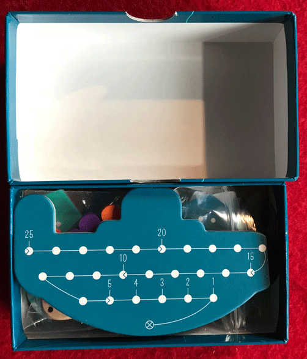

In this Deep Sea Adventure review, Board Crazy evaluates the fun and simple tabletop game, designed by Jun Sasaki & Goro Sasaki and published by Oink Games. In Deep Sea Adventure, players search the ocean floor for the best sunken treasures they can find. But they need to be careful, or they’ll run out of air before they make it back to the submarine! Read further for our thoughts on this game!
D reviews Deep Sea Adventure
 (Author’s
note: this review is meant to accompany our gameplay video and will not
go in-depth on the game’s rules. If you’re interested in learning how
the game is played, please watch the video. It’s not bad.)
(Author’s
note: this review is meant to accompany our gameplay video and will not
go in-depth on the game’s rules. If you’re interested in learning how
the game is played, please watch the video. It’s not bad.)
Deep Sea Adventure is a short and simple game, so I think my review of it will follow accordingly. It’s not a great game, certainly, but I think my feelings for it are slightly warmer than the other fellows of our triumvirate, or at least warmer than Graham’s. I think there might even be a very good game buried in there somewhere – it’s just obscured by some head-scratching design decisions.
Honestly, I think the gameplay itself is really solid. Rolling dice to see how far you move, collecting as much treasure as you can, and trying to get back to the submarine before your air runs out creates a pretty fun gameplay cycle. Not knowing quite how many points your ruins tiles are worth adds a good bit of drama for their eventual reveal… or at least it would, if it were easier to actually make it back to score them. The issue comes down to the submarine and the dice. The submarine has 25 points of air that can be expended, and the dice that let you move are six-sided, but only go up to three pips each. These two things really don’t work together. The air starts to run out pretty quickly once people have picked up some treasure, and the dice limiting players to (realistically) five spaces of movement or fewer makes it far too commonplace for no one to score.
And it seems, from my point-of-view, to have a pretty easy fix: either increase the amount of air the players have or use dice with more pips. Of these two options, the dice change seems to be the better solution. I appreciate that this game is supposed to fit in a tiny box, so a bigger submarine token isn’t ideal. But just using standard D6s instead of these custom ones would not only probably be cheaper, but also lead to a better game. I really wonder how the designers came to this decision.
And like I said, Deep Sea Adventure is still kind of fun! It’s properly quick, which is a bonus, and the way it uses its theme to blend competitiveness and cooperation is pretty neat. And the package itself, tiny as it is, is very solid. The components aren’t spectacular, but they’re cute and definitely get the job done. I just wish it was tweaked ever so slightly, because it is so obviously flawed. I can’t really recommend it wholeheartedly, but if what you saw in our video piqued your interest, or if you want to maybe try some alterations of your own, give it a look.
D’s Rating: Three Stars out of Five.
Will reviews Deep Sea Adventure
 Deep Sea Adventure appeals to me in the same way that the film Deep Blue Sea
does – they’re both fun and they’re both dumb. I mean – both are so
heavily flawed that they will undoubtedly annoy certain kinds of people.
But if you’re like me and often enjoy the stupid side of life, then
you’ll probably appreciate Deep Sea Adventure (and Deep Blue Sea).
As a tabletop game, it’s not the most polished experience. In fact, I
would say that Deep Sea Adventure might be one of the most flawed games
I’ve ever played, at least on the channel. I’m not saying it’s horrible
by any means, but conversely, it’s not very good either.
Deep Sea Adventure appeals to me in the same way that the film Deep Blue Sea
does – they’re both fun and they’re both dumb. I mean – both are so
heavily flawed that they will undoubtedly annoy certain kinds of people.
But if you’re like me and often enjoy the stupid side of life, then
you’ll probably appreciate Deep Sea Adventure (and Deep Blue Sea).
As a tabletop game, it’s not the most polished experience. In fact, I
would say that Deep Sea Adventure might be one of the most flawed games
I’ve ever played, at least on the channel. I’m not saying it’s horrible
by any means, but conversely, it’s not very good either.
Before I start lambasting the poorer mechanics of this game, I should note that it’s extremely easy to learn and set up. Deep Sea Adventure is by no means a difficult game to understand or a long game to play. Also, the components are above average when it comes to build quality, and the rule-sheet is succinct and helpful. On the other hand, we did often forget all of the actions we could take on our turns, as well as the order in which they should be taken. That’s on us, but perhaps a set of action explanation cards would’ve simplified the proceedings. This is a small gripe, but forgetting the rules is common and always problematic.
However, there is a much more serious issue with Deep Sea Adventure – it has the runaway leader problem. And in a game where it’s very easy to get stranded without points at the end of a round, this becomes really noticeable. For example, let’s say that one player makes it back to the sub before the other players do, and then the round ends. The player who successfully returned will get to score their points, while the other players will be left without points. From there on out, the player who scored won’t have to dive as far away since they already have the lead. In fact, the best thing for them to do is to swim out a little, turn around, and pick up treasure the entire way back. This will reduce the other players’ air supply, thus preventing them from retrieving the farther-out treasure tiles with the points they need to mount a comeback. Honestly, getting an early lead and then screwing everyone else over is a strategy that works nearly every time.
If you’re like me, then you’ll want to swim out as far as you can in order to retrieve the most valuable treasures, but that’ll most likely cause you to lose. Unless everyone agrees ahead of time to swim far from the submarine, you won’t be able to retrieve those treasures and make it back before the air runs out. That quickly becomes disappointing and annoying, but it isn’t always the other players’ fault. After all, you roll two dice to move, and the highest possible distance you can move on a single turn is six spaces. And if you pick up treasure, you’ll move even slower. Someone who’s rolling low will have no choice but to turn back early and pick up treasure along the way, further inconveniencing the other players who might be rolling higher.
I wish I could say that Deep Sea Adventure gets better with more players, but it certainly doesn’t. The more players there are, the better the chance that the oxygen supply will run out, leaving you floating away without any points. It’s almost as if the designers put the higher scoring treasures in the game to mess with people, since you’ll almost definitely lose if you go for them. And once you and your friends realize that, the gameplay becomes repetitive. Thinking about it, the game would probably be much more entertaining with dice that went up to four or even six. That way, you’d be much more likely to score if you went out farther than your opponents.
Yet at the end of the day, I didn’t walk away from Deep Sea Adventure feeling anger or frustration; I was actually relatively at peace. Once you realize what this game is, you’ll also realize that there’s no point in getting flustered – the game is simple and dumb. If you can maintain a Zen level of indifference, you might actually start enjoying the defective mechanics of the gameplay. I know I did, which might be why I’m so conflicted with this review. Did the designers know they were creating such a flawed but stupidly effective game? Did they do this on purpose?! I suppose all we can do is speculate. Either way, I think I like Deep Sea Adventure, or do I hate it? I actually don’t know… I guess I should just give it a score and let that be the end of it.
I give Deep Sea Adventure a: C+
Graham reviews Deep Sea Adventure
 My
initial reaction to Deep Sea Adventure was definitely not a good one. I
believe my feelings were (and are) justified because Deep Sea Adventure
has some significant problems and few redeeming qualities. However, I
probably overreacted a little. My guess is that Deep Sea Adventure isn’t
meant to be taken too seriously and is a very light game that should be
played with kids or your drunk friends.
My
initial reaction to Deep Sea Adventure was definitely not a good one. I
believe my feelings were (and are) justified because Deep Sea Adventure
has some significant problems and few redeeming qualities. However, I
probably overreacted a little. My guess is that Deep Sea Adventure isn’t
meant to be taken too seriously and is a very light game that should be
played with kids or your drunk friends.
The first and biggest issue I noticed with Deep Sea Adventure was that it’s way too difficult. Not to learn, but to do anything significant. In the game that we played (in our video), if we moved out past the 2nd level ruins, we were guaranteed not to make it back to the submarine before the oxygen ran out. This put all of us in a situation where we would make two or three rolls, collect one or two treasures, and then start heading back. Even then (*Spoilers*), D was the only person to make it back at all, and he was barely able to accomplish that.
This leads me right into my next problem with Deep Sea Adventure. In our gameplay video, D successfully made it back to the sub while Will and I both failed. This created a runaway leader problem because Will and I both had to make higher risk moves and head out as far as we could. On the other hand, D just made one or two rolls, picked up a couple low tier treasures, and made his way back. Once again, Will and I were unable to make it back to the submarine in time. I think what frustrates me the most is that there is almost no strategy here. It comes down to lucky rolls, and being the first to turn around. I feel like this game would have been better if the rules were slightly tweaked and/or D6 dice were used instead of D3 dice.
There really isn’t much more that I have to complain about because ultimately this game isn’t that deep – yes, pun definitely intended. As I said in my opening paragraph, there are a couple of redeeming qualities to Deep Sea Adventure. First and foremost, the game looks really cool – the tiny sub and ruins chips really stand out. On top of that, the game is incredibly easy to learn and does not require a lot of concentration to play. I wasn’t kidding when I said this game was meant for drunk people. It’s a simple, stupid game that is fun to bulls*** around with and not take too seriously.
Deep Sea Adventure is just not my cup of tea. I don’t see that much value in playing this game, given its significant flaws and lack of meaningful strategy. However, if you’re really craving a board game, and I mean really craving one, and the only people around are a three-year-old and the guy who’s downed a bottle of Jack, then I guess it would suffice. I give Deep Sea Adventure One Thumb Down.
Leave a Reply
You must be logged in to post a comment.